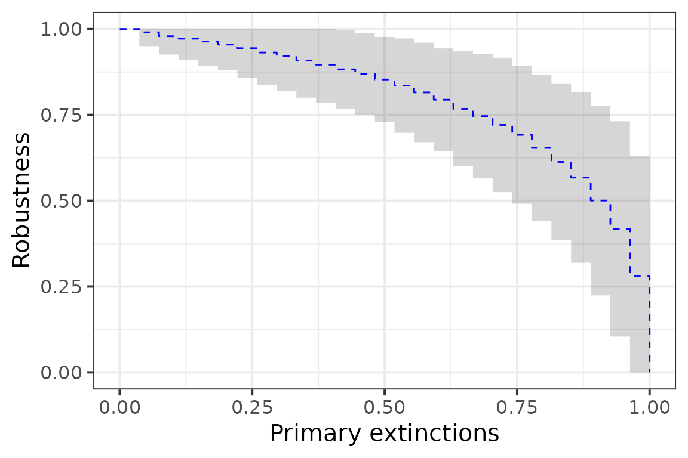
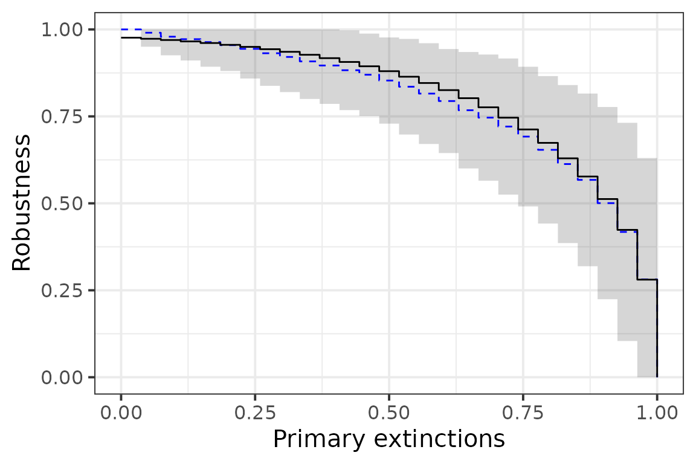
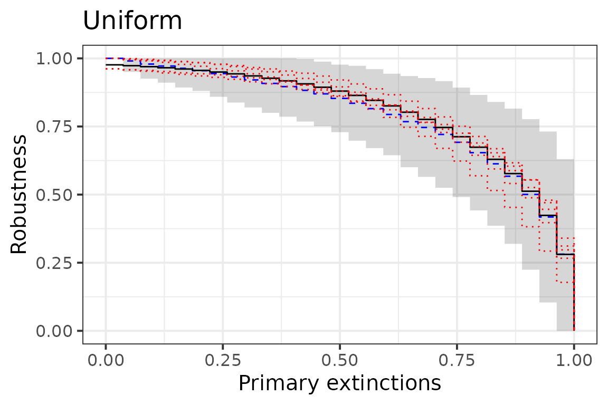

In what follows, we will use robber to illustrate how different set of parameters of block models, representing different mesoscale structure of networks has an influence on the robustness of bipartite ecological networks. By doing so, we will review the main functions of the package.
Robustness of real bipartite ecological networks
We load 3 different networks, a host-parasite, a seed-dispersal and a pollination’s one.
data("hostparasite", package = "robber")
data("seeddispersal", package = "robber")
data("pollination", package = "robber")They have the following richness and connectance:
print(paste0("Host-Parasite: ", nrow(hostparasite), " ",
ncol(hostparasite), " ", mean(hostparasite)), sep = ",")
#> [1] "Host-Parasite: 27 26 0.280626780626781"
print(paste0("Seed Dispersal: ", nrow(seeddispersal), " ",
ncol(seeddispersal), " ", mean(seeddispersal)), sep = ",")
#> [1] "Seed Dispersal: 36 19 0.288011695906433"
print(paste0("Pollination: ", nrow(pollination), " ",
ncol(pollination), " ", mean(pollination)), sep = ",")
#> [1] "Pollination: 17 51 0.14878892733564"Analyzing the robustness of a host-parasite network
To compute the empirical robustness, we can use the function robustness_emp() which uses a Monte Carlo simulation. Several options are available to choose the type of extinctions sequences and the way they are computed. The function return a vector of remaining species after each extinction ($fun) and the robustness statistic as the area under the curve ($auc). For example, using the host-parasite network and the default uniform extinction sequence:
(rob_emp_unif <- robustness_emp(hostparasite))
#> $model
#> [1] "empirical"
#>
#> $method
#> [1] "ordered"
#>
#> $ext_seq
#> [1] "uniform"
#>
#> $power
#> [1] 1
#>
#> $fun
#> [1] 1.0000000 0.9897436 0.9824359 0.9743590 0.9660256 0.9566667 0.9473077
#> [8] 0.9366667 0.9251282 0.9138462 0.8997436 0.8826923 0.8671795 0.8510256
#> [15] 0.8350000 0.8185897 0.7988462 0.7752564 0.7534615 0.7257692 0.6939744
#> [22] 0.6498718 0.6061538 0.5546154 0.4952564 0.4130769 0.2841026 0.0000000
#>
#> $sd
#> [1] 0.00000000 0.02094456 0.02691634 0.03274064 0.03647539 0.04035638
#> [7] 0.04425886 0.04966426 0.05315754 0.05656518 0.06186508 0.06688601
#> [13] 0.06878579 0.07177205 0.07356209 0.07873216 0.08426295 0.08929448
#> [19] 0.09625207 0.09912268 0.10314647 0.11297538 0.12321673 0.13074350
#> [25] 0.14114045 0.15540947 0.16337767 0.00000000
#>
#> $auc
#> [1] 0.7961776
#>
#> attr(,"class")
#> [1] "robber"
plot(rob_emp_unif)
We can infer a Latent Block Model (LBM) to obtain a sparse parametric representation of the network by regrouping species into blocks. This can be done automatically with this package:
(lbm_param <- get_lbm_param(hostparasite, ncores = 1L))#> $con
#> [,1] [,2]
#> [1,] 0.03759168 0.4609027
#> [2,] 0.25445594 0.9500186
#>
#> $pi
#> [1] 0.6327591 0.3672409
#>
#> $rho
#> [1] 0.6877587 0.3122413
#>
#> $nr
#> [1] 27
#>
#> $nc
#> [1] 26We can see that the network is divided into 4 blocks (2 groups of hosts and 2 groups of parasites). The network as a classic core-periphery structure, with a very connected core (\(.95\)) composed of about a third of the species.
Robber compute the robustness as the the robustness function integrated over all possible networks which arise from the same set of Block Model parameters.
Given the parameters, we can compute the LBM robustness:
(rob_lbm_unif <- do.call(robustness_lbm, lbm_param))
#> $model
#> [1] "lbm"
#>
#> $ext_seq
#> [1] "uniform"
#>
#> $fun
#> [1] 0.9762710 0.9731198 0.9695500 0.9655062 0.9609254 0.9557362 0.9498579
#> [8] 0.9431989 0.9356556 0.9271105 0.9174307 0.9064653 0.8940437 0.8799724
#> [15] 0.8640321 0.8459745 0.8255172 0.8023389 0.7760706 0.7462807 0.7124428
#> [22] 0.6738552 0.6294316 0.5771287 0.5123727 0.4236969 0.2806268 0.0000000
#>
#> $auc
#> [1] 0.808319
#>
#> $block
#> NULL
#>
#> $method
#> [1] "exact"
#>
#> $param
#> $param$con
#> [,1] [,2]
#> [1,] 0.03759168 0.4609027
#> [2,] 0.25445594 0.9500186
#>
#> $param$pi
#> [1] 0.6327591 0.3672409
#>
#> $param$rho
#> [1] 0.6877587 0.3122413
#>
#> $param$nr
#> [1] 27
#>
#> $param$nc
#> [1] 26
#>
#>
#> $sd
#> [1] 0.03373627 0.03433957 0.03513052 0.03610450 0.03725673 0.03858187
#> [7] 0.04007362 0.04172432 0.04352444 0.04546207 0.04752240 0.04968705
#> [13] 0.05193346 0.05423434 0.05655715 0.05886404 0.06111231 0.06325621
#> [19] 0.06525096 0.06706045 0.06866987 0.07010104 0.07141118 0.07260006
#> [25] 0.07319109 0.07082149 0.05674207 0.00000000
#>
#> attr(,"class")
#> [1] "robber"As we can see the two robustness statistics are very close:
rob_emp_unif$auc
#> [1] 0.7961776
rob_lbm_unif$auc
#> [1] 0.808319And we can plot the two curves (the empirical one in blue and the LBM one in black):

Using the above parameters we may simulate networks from the same set of LBM parameters, the black line is the average of all the red dotted line which are the robustness function of particular realization of networks issued from the same distribution:
rob_fun <- lapply(
X = seq_len(10),
FUN = function(i) {
A <- simulate_lbm(con = lbm_param$con,
pi = lbm_param$pi,
rho = lbm_param$rho,
nr = lbm_param$nr,
nc = lbm_param$nc)$A
return(list(unif = robustness_emp(A),
dec = robustness_emp(A, ext_seq = "decreasing"),
inc = robustness_emp(A, ext_seq = "increasing")))
}
)
pu <- plot(rob_emp_unif) +
plot(rob_lbm_unif, add = TRUE) +
plot(rob_fun[[1]]$unif, add = TRUE, lty = "dotted", col = "red") +
plot(rob_fun[[2]]$unif, add = TRUE, lty = "dotted", col = "red") +
plot(rob_fun[[3]]$unif, add = TRUE, lty = "dotted", col = "red") +
plot(rob_fun[[4]]$unif, add = TRUE, lty = "dotted", col = "red") +
plot(rob_fun[[5]]$unif, add = TRUE, lty = "dotted", col = "red") +
ggtitle("Uniform")
pu
Computing the robustness for other extinctions sequence gives complementary information on the network. For example extinctions by decreasing or increasing number of connections may give an information about a worst-case and best-case scenario.
rob_emp_dec <- robustness_emp(hostparasite, ext_seq = "decreasing")
rob_emp_inc <- robustness_emp(hostparasite, ext_seq = "increasing")
rob_emp_dec$auc
#> [1] 0.5798813
rob_emp_inc$auc
#> [1] 0.8918519The above method is very sensitive to the network sampling, in particular for increasing connection. One way to counter that is to consider that the order of extinction is a function of the degree, for example it might depends linearly on it.
rob_emp_dec_lin <- robustness_emp(hostparasite, ext_seq = "decreasing",
method = "linear")
rob_emp_inc_lin <- robustness_emp(hostparasite, ext_seq = "increasing",
method = "linear")
rob_emp_dec_lin$auc
#> [1] 0.6959592
rob_emp_inc_lin$auc
#> [1] 0.8458784As we can see the obtained robustness values are less extreme and closer to the one of a uniform primary extinctions distribution.
Using the LBM, we can compute a robustness where the extinction distribution is dependent of the block memberships of the primary species. For example, by ordering blocks by their connection probabilities, and extinguishing species base on this order, we obtain:
rob_lbm_dec <- do.call(robustness_lbm, c(lbm_param, ext_seq = "decreasing"))
rob_lbm_inc <- do.call(robustness_lbm, c(lbm_param, ext_seq = "increasing"))
rob_lbm_dec$auc
#> [1] 0.6383963
rob_lbm_inc$auc
#> [1] 0.9064095
plot(rob_lbm_unif, col = "black", lty = 1) +
plot(rob_emp_unif, add = TRUE, col = "blue", lty = 2) +
plot(rob_emp_dec, add = TRUE, lty = 3, col = "blue") +
plot(rob_emp_dec_lin, add = TRUE, lty = 4, col = "blue") +
plot(rob_emp_inc, add = TRUE, lty = 3, col = "blue") +
plot(rob_emp_inc_lin, add = TRUE, lty = 4, col = "blue") +
plot(rob_lbm_dec, add = TRUE, lty = 1, col = "black") +
plot(rob_lbm_inc, add = TRUE, lty = 1, col = "black") +
ggtitle("Robustness of hostparasite")
Comparing the robustness of 3 networks
How robust is the robustness of the host-parasite network compare to the one of the pollination and seed dispersal’s one? As we have seen above, the richness and the connectance of these networks are different and it is difficult to know which part of this difference is due sampling method and effort. Let first analyze the mesoscale structure of the mutualistic networks.
pl_param <- get_lbm_param(pollination, ncores = 1L)
sd_param <- get_lbm_param(seeddispersal, ncores = 1L)
pl_param
#> $con
#> [,1] [,2]
#> [1,] 0.21745638 0.2197264
#> [2,] 0.02128773 0.4718378
#>
#> $pi
#> [1] 0.3615401 0.6384599
#>
#> $rho
#> [1] 0.8038735 0.1961265
#>
#> $nr
#> [1] 17
#>
#> $nc
#> [1] 51For the pollination network, we have \(2\) blocks of plants and \(2\) block of pollinators. About a third of the plants belong to a block which is equally connected to the whole network. The rest interacts with a high probability with about a fifth of the pollinators and very rarely with the rest of the pollinators.
sd_param
#> $con
#> [,1] [,2] [,3]
#> [1,] 0.11544193 0.13851862 0.82679371
#> [2,] 0.27290332 0.01141444 0.07307945
#> [3,] 0.01017275 0.76159403 0.09607779
#> [4,] 0.67676491 0.77581178 0.96824538
#>
#> $pi
#> [1] 0.39352244 0.30071493 0.24805831 0.05770433
#>
#> $rho
#> [1] 0.2642601 0.5232847 0.2124552
#>
#> $nr
#> [1] 36
#>
#> $nc
#> [1] 19The seed-dispersal networks has a more complex mesoscale structure with \(4\) blocks of plants and \(3\) blocks of birds. It has a kind of double core structure. We compare the three networks using the LBM robustness.
pl_lbm_unif <- do.call(robustness_lbm, pl_param)
pl_lbm_dec <- do.call(robustness_lbm, c(pl_param, ext_seq = "decreasing"))
pl_lbm_inc <- do.call(robustness_lbm, c(pl_param, ext_seq = "increasing"))
sd_lbm_unif <- do.call(robustness_lbm, sd_param)
sd_lbm_dec <- do.call(robustness_lbm, c(sd_param, ext_seq = "decreasing"))
sd_lbm_inc <- do.call(robustness_lbm, c(sd_param, ext_seq = "increasing"))| Extinction | hostparasite | pollination | seeddispersal |
|---|---|---|---|
| Uniform | 0.8083190 | 0.6055976 | 0.9207443 |
| Increasing | 0.9064095 | 0.7173889 | 0.9624479 |
| Decreasing | 0.6383963 | 0.4338048 | 0.7204255 |
As we can see, for all three types of robustness, the seed-dispersal is more robust than the host-parasite network. The pollination network being less robust than the other 2. We wish to know which part is due to the difference in the richness and connectance of these networks and which part is due there different structure. For this, we will change the parameters of those networks, using the compare_robustness() function and compute a new robustness, where the difference depends solely on the mesoscale structure of these networks. For this, we normalize the networks so they have the connectance of the sparsest network (pollination) and the richness of the richest network (seeddispersal for row species and pollination for column species).
comp_unif <- compare_robustness(list(lbm_param, pl_param, sd_param),
dens = .148, new_nr = 36, new_nc = 51)
comp_inc <- compare_robustness(list(lbm_param, pl_param, sd_param),
dens = .148, new_nr = 36, new_nc = 51, ext_seq = "increasing")
comp_dec <- compare_robustness(list(lbm_param, pl_param, sd_param),
dens = .148, new_nr = 36, new_nc = 51, ext_seq = "decreasing")| Extinction | hostparasite | pollination | seeddispersal |
|---|---|---|---|
| Uniform | 0.7222423 | 0.7768652 | 0.8225664 |
| Increasing | 0.8298738 | 0.8819160 | 0.8793888 |
| Decreasing | 0.5622294 | 0.5469495 | 0.6139946 |
While the robustness of seeddispersal is still the highest, we can see that pollination now have a higher robustness than hostparasite. Hence the lack of robustness of pollination compared to the other network was mainly due to its lower connectance and plant richness, rather than its particular mesoscale structure.
Comparing the influence of mesoscale structure on robustness
We will compare set of networks that all have the same number of rows, columns and connectance. We select those numbers such that the upper bound for the robustness with uniform extinctions is approximately 0.5.
dens <- .0156
nr <- 100
nc <- 100
rob_er <- auc_robustness_lbm(matrix(dens, 1,1), 1, 1, nr, nc)
rob_er
#> [1] 0.4999551We will consider 2 blocks of row species and 2 blocks of column species. The parameters will be as followed:
\(\pi\) The row blocks parameter will be set to [1/4, 3/4]
\(\rho\) The column blocks parameter will vary
-
con The connectivity parameters between blocks will be set to represent 2 classic topologies:
- Modular the shape of the connectivity matrix will be as follows:
| a | 1 |
| 1 | a |
- Nested A classic Core-periphery with or without strong connection between the core and the periphery depending on the parameters:
| a | a |
| a | 1 |
pi <- c(1/4, 3/4)
robust_topology <- tibble::tibble()
eps <- c(1/seq(8, 1.5, by = -.5), seq(1, 8, by = .5))
for(i in seq(19)) {
rho <- c(i*.05, (20-i)*.05)
list_con_mod <- lapply( eps,
function(j) {
list(con = matrix(c(j, 1,
1, j), 2, 2),
pi = pi,
rho = rho)})
rob_mod <- purrr::map_dfc(
.x = purrr::set_names(c("uniform", "increasing", "decreasing")),
.f = function(x)
unlist(compare_robustness(list_param = list_con_mod,
dens = dens,
new_nr = nr,
new_nc = nc,
ext_seq = x))) %>%
dplyr::mutate(Topology = "Modular",
rho = rho[1],
j = seq_along(eps))
list_con_nest <- lapply( eps,
function(j) {
list(con = matrix(c(j, j,
j, 1), 2, 2),
pi = pi,
rho = rho)})
rob_nest <- purrr::map_dfc(.x = purrr::set_names(c("uniform", "increasing", "decreasing")),
.f = function(x)
unlist(compare_robustness(list_param = list_con_nest,
dens = dens,
new_nr = nr,
new_nc = nc,
ext_seq = x))) %>%
dplyr::mutate(Topology = "Core-Periphery",
rho = rho[1],
j = seq_along(eps))
robust_topology <- dplyr::bind_rows(robust_topology, rob_mod, rob_nest)
}We print a heatmap going from blue (least robust), to white (same robustness than a network with no mesoscale structure), to red (more robust than a network with no structure).
prt <- robust_topology %>%
# rename(Uniform = uniform, Increasing = increasing, Decreasing = decreasing) +
tidyr::pivot_longer(cols = c("decreasing","uniform", "increasing"),
names_to = "Extinction",
values_to = "Robustness") %>%
mutate(Extinction = forcats::as_factor(
case_when(Extinction == "decreasing" ~ "Decreasing",
Extinction == "uniform" ~ "Uniform",
Extinction == "increasing" ~ "Increasing"))) %>%
ggplot(ggplot2::aes(x = j, y = rho)) +
geom_tile(ggplot2::aes(fill = Robustness)) +
facet_grid(Topology ~ Extinction) +
scale_fill_gradient2(low = "blue", high = "red", mid = "white",
midpoint = rob_er,
guide_colorbar(title = "R")) +
annotate(x = 15, y = .5, geom = "point", col = "black", size = 3) +
annotate(x = 15, y = .55, geom = "text", label = "ER",
col = "black", size = 3) +
scale_x_continuous(breaks = c(0, 7, 15, 22, 30),
labels = c(1/8, 1/4, 1, 4, 8)) +
coord_fixed(ratio = 30) +
theme_bw(base_size = 15, base_line_size = 0)
# df_shape <- data.frame(
# x = c(1, 1, 29, 29, 1, 14),
# y = c(.05, .05, .05, .5, .95, .05),
# button = c("a", "d", "b","e", "c", "f"),
# Topology = rep(c("Core-Periphery", "Modular"), 3),
# Extinction = c(rep("Decreasing", 2), rep("Increasing", 2), rep("Uniform", 2)))
df_shape <- data.frame(
x = c(1 , 29 , 29, 29, 1, 1),
y = c(.85, .05, .35, .95, .6, .4),
button = c(15L, 17L, 18L, 0L, 2L, 5L),#,
Topology = rep(c("Core-Periphery", "Modular"), each = 3))
# Extinction = c(rep("Decreasing", 2), rep("Increasing", 2), rep("Uniform", 2)))
prt + geom_point(data = df_shape, mapping = aes(x = x, y = y, shape = button),
size = 4, show.legend = FALSE)+
scale_shape_identity() Influence of the mesoscale structure on the variability of the robustness
Finally, we will try to figure out how the variability of the robustness depends on the mesoscale structure of the network and which part of it comes from the variability in connectance and size of blocks of the network by restricting ourselves to networks that has the same block proportions and number of connections between blocks as expected.
We restrict ourselves to 3 classic topologies: ER (no mesoscale structure), modular (assortative communities) and core-periphery. We observe that the variability increase with mesoscale structure complexity and that the main part of it is due to the variance in block proportions and number of connections between blocks.
if (! file.exists("res_gnp.rds")) {
n_iter <- 300
pi <- c(.1,.9)
rho <- c(.2,.8)
con <- matrix(c(.8, .4, .4, .1), 2, 2)
con <- 0.1*con/as.vector(pi%*%con%*%rho)
nr <- 100
nc <- 100
res <- pbmcapply::pbmclapply(
X = seq(500),
FUN = function(i) {
G <- simulate_lbm(nr = nr, nc = nc, pi = pi, rho = rho, con = con)
auc_mc <- robustness_emp(G$A, nb_iter = n_iter)$auc
par <- get_lbm_param(G$A)
auc_lbm <- robustness_lbm(par$con, par$pi, par$rho, nr, nc)$auc
return(tibble(type = "cp", mc = auc_mc, lbm = auc_lbm ))
}, mc.cores = 8
)
res_cp <- bind_rows(res)
n_iter <- 300
pi <- 1
rho <- 1
con <- matrix(0.1, 1, 1)
nr <- 100
nc <- 100
res <- pbmcapply::pbmclapply(
X = seq(500),
FUN = function(i) {
G <- simulate_lbm(nr = nr, nc = nc, pi = pi, rho = rho, con = con)
auc_mc <- robustness_emp(G$A, nb_iter = n_iter)$auc
par <- get_lbm_param(G$A)
auc_lbm <- robustness_lbm(par$con, par$pi, par$rho, nr, nc)$auc
return(tibble(type = "er", mc = auc_mc, lbm = auc_lbm ))
}, mc.cores = 8
)
res_er <- bind_rows(res)
pi <- c(.2, .8)
rho <- c(.9, .1)
con <- matrix(c(.6, .1, .2, .2), 2, 2)
con <- 0.1*con/as.vector(pi%*%con%*%rho)
res <- pbmcapply::pbmclapply(
X = seq(500),
FUN = function(i) {
G <- simulate_lbm(nr = nr, nc = nc, pi = pi, rho = rho, con = con)
auc_mc <- robustness_emp(G$A, nb_iter = n_iter)$auc
par <- get_lbm_param(G$A)
auc_lbm <- robustness_lbm(par$con, par$pi, par$rho, nr, nc)$auc
return(tibble(type = "mod", mc = auc_mc, lbm = auc_lbm ))
}, mc.cores = 8
)
res_mod <- bind_rows(res)
res_gnp <- bind_rows(res_cp, res_mod, res_er)
saveRDS(res_gnp, "res_gnp.rds")
} else {
res_gnp <- readRDS("res_gnp.rds")
}
if (! file.exists("res_gnm.rds")) {
n_iter <- 300
nr <- 100
nc <- 100
pi <- c(.1,.9)
rho <- c(.2,.8)
con <- matrix(c(.8, .4, .4, .1), 2, 2)
con <- 0.1*con/as.vector(pi%*%con%*%rho)
pi <- nr * pi
rho <- nc * rho
con <- round(outer(pi, rho) * con)
res <- pbmcapply::pbmclapply(
X = seq(500),
FUN = function(i) {
G <- simulate_lbm(nr = nr, nc = nc, pi = pi, rho = rho, con = con, method = "gnm")
auc_mc <- robustness_emp(G$A, nb_iter = n_iter)$auc
par <- get_lbm_param(G$A)
auc_lbm <- robustness_lbm(par$con, par$pi, par$rho, nr, nc)$auc
return(tibble(type = "cp", mc = auc_mc, lbm = auc_lbm ))
}, mc.cores = 8
)
res_cp_gnm <- bind_rows(res)
pi <- 1
rho <- 1
con <- matrix(0.1, 1, 1)
pi <- nr * pi
rho <- nc * rho
con <- round(outer(pi, rho) * con)
res <- pbmcapply::pbmclapply(
X = seq(500),
FUN = function(i) {
G <- simulate_lbm(nr = nr, nc = nc, pi = pi, rho = rho, con = con, method = "gnm")
auc_mc <- robustness_emp(G$A, nb_iter = n_iter)$auc
par <- get_lbm_param(G$A)
auc_lbm <- robustness_lbm(par$con, par$pi, par$rho, nr, nc)$auc
return(tibble(type = "er", mc = auc_mc, lbm = auc_lbm ))
}, mc.cores = 8
)
res_er_gnm <- bind_rows(res)
pi <- c(.2, .8)
rho <- c(.9, .1)
con <- matrix(c(.6, .1, .2, .2), 2, 2)
con <- 0.1*con/as.vector(pi%*%con%*%rho)
pi <- nr * pi
rho <- nc * rho
con <- round(outer(pi, rho) * con)
res <- pbmcapply::pbmclapply(
X = seq(500),
FUN = function(i) {
G <- simulate_lbm(nr = nr, nc = nc, pi = pi, rho = rho, con = con, method = "gnm")
auc_mc <- robustness_emp(G$A, nb_iter = n_iter)$auc
par <- get_lbm_param(G$A)
auc_lbm <- robustness_lbm(par$con, par$pi, par$rho, nr, nc)$auc
return(tibble(type = "mod", mc = auc_mc, lbm = auc_lbm ))
}, mc.cores = 8
)
res_mod_gnm <- bind_rows(res)
res_gnm <- bind_rows(res_cp_gnm, res_mod_gnm, res_er_gnm)
saveRDS(res_gnm, "res_gnm.rds")
} else {
res_gnm <- readRDS("res_gnm.rds")
}
if (! file.exists("res_block.rds")) {
n_iter <- 300
nr <- 100
nc <- 100
pi <- c(.1,.9)
rho <- c(.2,.8)
con <- matrix(c(.8, .4, .4, .1), 2, 2)
con <- 0.1*con/as.vector(pi%*%con%*%rho)
simz <- function() {
A <- diag(0, 100)
for (k in seq_along(pi)) {
for (q in seq_along(rho)) {
A[Z == k, W == q] <- igraph::as_incidence_matrix(
igraph::sample_bipartite(sum(Z == k), sum(W == q),
type = "gnp", p = con[k,q]))
}
}
return(A)
}
Z <- rep(seq(2), times = 100*pi)
W <- rep(seq(2), times = 100*rho)
res <- pbmcapply::pbmclapply(
X = seq(500),
FUN = function(i) {
G <- simz()
auc_mc <- robustness_emp(G, nb_iter = n_iter)$auc
par <- get_lbm_param(G)
auc_lbm <- robustness_lbm(par$con, par$pi, par$rho, nr, nc)$auc
return(tibble(type = "cp", mc = auc_mc, lbm = auc_lbm ))
}, mc.cores = 8
)
res_cp_block <- bind_rows(res)
pi <- 1
rho <- 1
con <- matrix(0.1, 1, 1)
Z <- rep(seq(1), times = 100*pi)
W <- rep(seq(1), times = 100*rho)
res <- pbmcapply::pbmclapply(
X = seq(500),
FUN = function(i) {
G <- simz()
auc_mc <- robustness_emp(G, nb_iter = n_iter)$auc
par <- get_lbm_param(G)
auc_lbm <- robustness_lbm(par$con, par$pi, par$rho, nr, nc)$auc
return(tibble(type = "er", mc = auc_mc, lbm = auc_lbm ))
}, mc.cores = 8
)
res_er_block <- bind_rows(res)
pi <- c(.2, .8)
rho <- c(.9, .1)
con <- matrix(c(.6, .1, .2, .2), 2, 2)
con <- 0.1*con/as.vector(pi%*%con%*%rho)
W <- rep(seq(2), times = 100*rho)
Z <- rep(seq(2), times = 100*pi)
res <- pbmcapply::pbmclapply(
X = seq(500),
FUN = function(i) {
G <- simz()
auc_mc <- robustness_emp(G, nb_iter = n_iter)$auc
par <- get_lbm_param(G)
auc_lbm <- robustness_lbm(par$con, par$pi, par$rho, nr, nc)$auc
return(tibble(type = "mod", mc = auc_mc, lbm = auc_lbm ))
}, mc.cores = 8
)
res_mod_block <- bind_rows(res)
res_block <- bind_rows(res_cp_block, res_mod_block, res_er_block)
saveRDS(res_block, "res_block.rds")
} else {
res_block <- readRDS("res_block.rds")
}
res_gnp %>%
mutate(Model = "Canonical") %>%
pivot_longer(cols = - c(type, Model), names_to = "Method", values_to = "Robustness") %>%
# rename(Topology = type) %>%
mutate(
Topology = case_when(
type == "cp" ~ "Core-Periphery",
type == "er" ~ "ER",
type == "mod" ~ "Modular"
)) %>%
filter(Method == "mc") %>%
ggplot(aes(x = Robustness, fill = Topology, lty = Topology)) +
geom_density(alpha = .3) +
# ggridges::geom_density_ridges(aes(y = Model), alpha = .3) +
# geom_density(alpha = .2) +
ylab(label = "") +
# facet_wrap(~ Model) +
theme_minimal(base_size = 15)